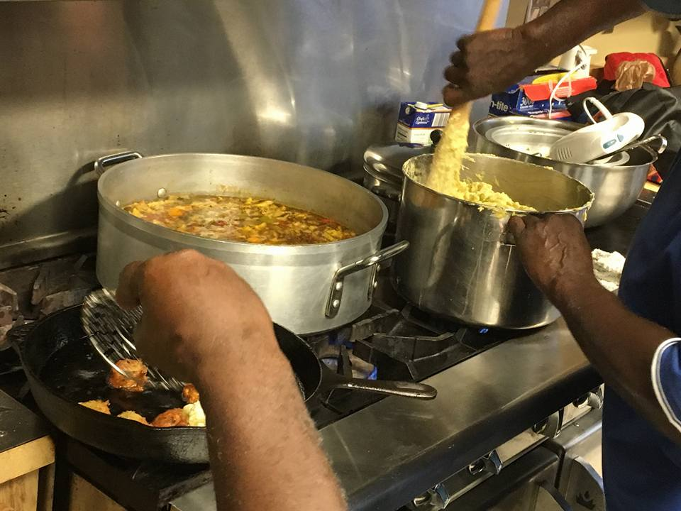

July 2017 Summary
|
The meeting highlights for this month are as follows:
|
 Bajan chefs! #undercoverchefs |
Please! Gimme’ de Way It Was
By: Marjorie McCauley, a CFL Bajan
Dear Bruddas and Sistas,
It did a longtime since we correspond, but memba uh does always mention wunnah in muh prayers. Uh hay watching a show pon tv bout boxing en straight away it brings back to mind wuh happen dis week, wid muh good friends, Obe and Maude. It only lack dah foe one o’dem ended up in de hospital.
Yuh know I doan like to talk nuhbody name but I only tellin’ wunnah, so wunnah would know to be careful.
Obe went outside she front gate bright and early one foeday morning to pickup de newspaper and butt up she neighbor who was just coming home from night work. Like a good neighbor Obe holler fuh she and she come cross de road and de two o’dem was stanning up dere talking. Next ting duh know a lil school girl bout 15 pass right next to dem, nuff to lick dem down and she aint speak. Obe sings out, "Yuh see dah doah, Maude, she pass two experience people hay en she cheu back she head and style and gone long widdout saying 'Morning'."
Maude sih yes, she notice dah too, but cud dere de young people got so much school work she musse stress out.
"Oh no, dah en soah! De young people is too unmannly dese days, en to think she en even she fadda child." Maude din like dah. Wuh Obe din noah is dat Maude and de girl mudda tick,tick soah! "But Obe, how you can sih something like dah nuh? You got proof?" Obe tell she yes.
"Maude dat child is de splitting image of Slim Boy down by de gas station and dat is de chute, as yuh sih me hay! And look evvabody in de districk dun know bout dat, wuh wrong wid you doah? It must be something, dat you picking up fuh she soah, wuh it is Maude?"
"I en know nuffin,’ I just want you to stop talking de people name in my presence." Well den Obe had to tell she bout all de times she talk people name wid she and how comes dis morning she playing so goody goody. "Doan forget you is de body dat tell me weh duh fine dah same lil girl last week, en it din en nuh church."
Bruggadown! Maude cheu two cuffs in she and de next ting uh know, dem two hard back women rolling bout pon de ground fighting like criminals til somebody had to come en part dem. But if yuh ask me dih en noway dem two should be outside dere suh early in de morning looking fuh trouble. Dem should be inside mekking duh tea and saying deh prayers.
In all muh days, I nevva tawt two marred women could leh such foolishness near put dem in de hospital.
So dis letta is just to leh wunnah know to care wunnah self cause satan is a very busy man.
I remain,
Cunfused In Orlando

Confused in Orlando series - 'Please! Gimme’ de Way It Was' Letter #1 by Marjorie McCauley is licensed under a Creative Commons Attribution-NonCommercial-NoDerivatives 4.0 International License.
Because when Bajans hangout, they say the darnest things!
- "Wunna mekking bare mock sport at dis ting!"
Bajan glossary
- batting long and strong: celebrating an anniversary (usually birthday) of many years, and you are in good health
- fussy: very particular
- Bruggadown: the (loud) sound of a collision or fall, or something hitting something else hard
Highlights
Guest speaker: Mr. Roy Sampson, Caribbean American Association of Central Florida, Inc.
Guest speaker: Mr. Roy James, Financial Advisor
Bajan chefs